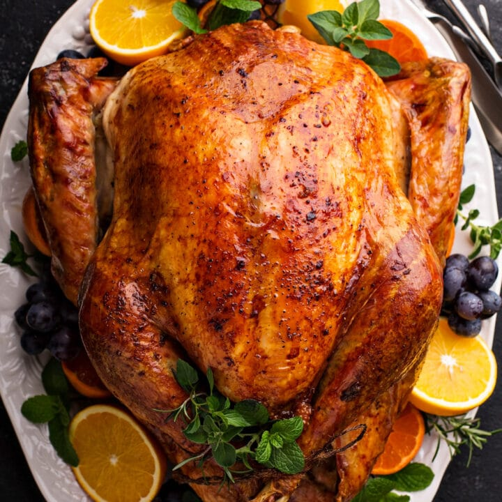

The most delicious dry brine turkey.

A delicious turkey, that is moist but cooked to a nice crisp.
Brining will help you cook the most succulent turkey you’ve ever had — and the smartest, easiest way to do it is with a dry brine. Even if you’re hosting Thanksgiving for the first time and are a bit nervous about cooking your inaugural turkey, here’s how to dry-brine your turkey like a pro and turn out an impeccably juicy and crispy bird.
Ingredients
- 1 Fresh or frozen turkey (1 to 1 1/2 pounds per person)
- Kosher salt
- 1 Tbsp. sugar
- Freshly ground pepper
- 2 sticks unsalted butter, softened
- 2 Tbsp. chopped fresh parsley
- 1 Tbsp. dried sage
- 1 Tbsp. dried thyme
- 1/4 Tsp. paprika
- 1/8 Tsp. ground cloves
Step by step instructions
- Unwrap the turkey and remove the neck and giblets (reserve for gravy). Rinse the turkey under cold water and pat dry. Combine 1/3 cup salt, the sugar and 1 teaspoon pepper in a bowl. Rub all over the turkey and inside the cavity. Put on a rimmed baking sheet and refrigerate, uncovered, at least 8 hours or overnight. Rinse well and pat dry. (A dry brine is a good choice if you're short on fridge space.)
- Mix the butter, parsley, sage, thyme, 1 teaspoon pepper, the paprika and cloves until combined. Reserve 4 tablespoons of the butter, then rub the rest under the turkey skin on the breasts and legs. Rub 2 tablespoons of the reserved butter on the skin; chill and save the rest for your gravy. Let the turkey stand 30 minutes at room temperature before roasting.
- Put the oven rack in the lowest position; preheat the oven to 350 degrees F. Put the turkey breast-side up on a rack in a large roasting pan, tucking the wing tips under. Tie the drumsticks together with twine. Roast until the skin is golden brown and a thermometer inserted into the thigh registers 165 degrees F, about 15 minutes per pound. Transfer to a cutting board and let rest 30 minutes before carving. Whisk the reserved 2 tablespoons flavored butter into your gravy just before serving, if desired.
Note: This recipe is not for a Kosher Bird, which is already brined. Use only for a frozen or fresh bird. Enjoy!! :)
Next Recipe
Back to Mainpage